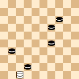

PDN Grammars¶
This section defines some PDN grammars. First a PDN 3.0 grammar is given, with some additional restrictions. The goal of these restrictions is to make PDN easier to parse, and thus to make it easier for programmers to support PDN 3.0. Also some explanations are given. Finally, a much more liberal reading grammar is given that can be used when reading existing PDN files. The grammars that are given in this section can not be parsed using a simple LL(1) parser. See the PDN Implementation section for some examples of LL(1) grammars.
PDN 3.0 Grammar¶
// Game independent productions
PdnFile : Game (GameSeparator Game)* GameSeparator?
GameSeparator : ASTERISK
Game : (GameHeader GameBody?) | GameBody
GameHeader : PdnTag+
GameBody : (GameMove | Variation | COMMENT | SETUP | NAG)+
PdnTag : LBRACKET IDENTIFIER STRING RBRACKET
GameMove : MOVENUMBER? Move MOVESTRENGTH?
Variation : LPAREN GameBody RPAREN
// Game dependent productions
Move : NormalMove | CaptureMove
NormalMove : Square MOVESEPARATOR Square
CaptureMove : Square (CAPTURESEPARATOR Square)+
Square : ALPHASQUARE | NUMSQUARE
// Tokens
MOVENUMBER : "[0-9]+\.(\.\.)?"
MOVESEPARATOR : "-"
CAPTURESEPARATOR : "x"
ALPHASQUARE : "[a-h][1-8]"
NUMSQUARE : "[1-9][0-9]?"
MOVESTRENGTH : "([\!\?]+)|(\([\!\?]+\))"
NAG : "\$[0-9]+"
LPAREN : "\("
RPAREN : "\)"
LBRACKET : "\["
RBRACKET : "\]"
ASTERISK : "\*"
SETUP : "\/[^\/]*\/"
STRING : "\"([^\"]|\\\")*\""
COMMENT : "\{[^}]*\}"
IDENTIFIER : "[A-Z][a-zA-Z0-9_]*"
Besides the usual white space characters (spaces, tabs and line endings),
also line comments starting with a % are allowed. For example
% Board game: International Draughts 10x10
[Date "2012.02.01"]
1. 32-28 19-23
PDN 3.0 Restrictions¶
When writing PDN, the following restrictions should be applied:
Spaces are not allowed in the notation of a move. For example,
1 - 7is not allowed.Spaces are not allowed between a move notation and it’s move strength indicator. For example,
32-28 !is not allowed.The symbol
*is not allowed as a move strength indicator. Use the$7numeric annotation glyph instead. See the PDN parsing issues section for an explanation.Only the symbol
*is allowed as a game separator.Squares of moves may not have leading zeroes. For example
01-07is not allowed.Moves must be written in the format (Alpha numeric, Numeric or SAN) as it is specified in the Notation attribute of the
GameTypetag. See also section GameType tag.Capture moves must be written using the capture separator corresponding to the
GameType, as it is specified in the table in section GameType tag.Ambiguous moves must be written in long notation, i.e. they must contain the full capture sequence. All other moves should use regular notation, i.e. only a begin and an end square.
Explanation: sometimes the regular notation of a move is ambiguous. For example in the position below the notation
47x36does not specify exactly which black pieces were captured.To resolve this,
47x38x24x13x36or47x38x20x9x36must be chosen.Disambiguated capture sequences have to specify a complete sequence of intermediate squares along the path of the capture. If there is a change in direction, an intermediate square is the square where a turn in direction was made. If there was not a change in direction, the intermediate square is the square immediately behind a captured piece. There is no intermediate square behind the last captured piece, but otherwise leaving out an intermediate square that is not necessary for the disambiguation is forbidden.
For example, in the above diagram
47x24x36is not allowed, even though it uniquely determines the move. Also47x33x24x13x36is not allowed, since 33 is not immediately behind a captured piece.
N.B. The first five restrictions are enforced by the grammar. Other restrictions have to be checked after parsing.
Explanation¶
The grammar is given in EBNF format.
In the productions the symbol ? stands for 0 or 1 repetitions, * stands for 0 or more repetitions,
and + stands for 1 or more repetitions. Tokens are given between double quotes and should be interpreted
as regular expressions.
Strings can have embedded double quotes
", by using the escape sequence\". For example"An embedded \" quote!".Comments are placed between braces. For example
{ Start of the game } 33-28 18-22 39-33? { This is a classical mistake }.In existing PDN files games are usually terminated with a result. It can be one of the chess results
1-0, 1/2-1/2, 0-1, one of the results of international draughts2-0, 1-1, 0-2, or a double forfeit0-0. Finally the*can be used as a terminator.A game can not be empty.
Both numeric moves
32-28and alpha-numeric movesa3-b4are allowed.In alpha-numeric moves the separator may be omitted, so
a3b4is allowed.A move number is a number followed by either one dot or three dots, for example
1. 32-28or23... 20-25. The three dots denotes that it is a black move.Moves can be annotated using a move strength indicator right after their notation, for example
10-15!or29-23(?).Moves can also be annotated using numeric annotation glyphs (NAGs). For example
$1has the same meaning as the move strength indicator!.Comments, variations and NAGs may appear anywhere in the game, in any order. This is less restrictive than in [Nemesis],
Variations are placed between parentheses. They can be nested arbitrarily, for example:
32-28 19-23 (18-23 38-32 (37-32? 23-29! { Black wins }) 12-18) 28x19 14x23.A setup of a new position is a FEN command surrounded by forward slashes (
/), and it can appear anywhere in the game. An example is/FEN "B:W18,24,27,28,K10,K15:B12,16,20,K22,K25,K29"/. It is not backward compatible with existing PDN, see the PDN Extensions section for an explanation.
PDN Reading Grammar¶
// Game independent productions
PdnFile : Game (GameSeparator Game)* GameSeparator?
GameSeparator : ASTERISK | Result
Game : (GameHeader GameBody?) | GameBody
GameHeader : PdnTag+
GameBody : (GameMove | Variation | COMMENT | SETUP | NAG)+
PdnTag : LBRACKET IDENTIFIER STRING RBRACKET
GameMove : MOVENUMBER? Move MOVESTRENGTH?
Variation : LPAREN GameBody RPAREN
// Game dependent productions
Move : NormalMove | CaptureMove | ELLIPSES
NormalMove : Square MOVESEPARATOR Square
CaptureMove : Square (CAPTURESEPARATOR Square)+
Square : ALPHASQUARE | NUMSQUARE
Result : Result1 | Result2 | DOUBLEFORFEIT
Result1 : WIN1 | DRAW1 | LOSS1
Result2 : WIN2 | DRAW2 | LOSS2
// Tokens
WIN1 : "1-0"
DRAW1 : "1\/2-1\/2"
LOSS1 : "0-1"
WIN2 : "2-0"
DRAW2 : "1-1"
LOSS2 : "0-2"
DOUBLEFORFEIT : "0-0"
ELLIPSES : "\.\.\."
MOVENUMBER : "[0-9]+\.(\.\.)?"
MOVESEPARATOR : "-"
CAPTURESEPARATOR : "[x:]"
ALPHASQUARE : "[a-h][1-8]"
NUMSQUARE : "([1-9][0-9]?)|(0[1-9])"
MOVESTRENGTH : "([\!\?]+)|(\([\!\?]+\))"
NAG : "\$[0-9]+"
LPAREN : "\("
RPAREN : "\)"
LBRACKET : "\["
RBRACKET : "\]"
ASTERISK : "\*"
SETUP : "\/[^\/]*\/"
STRING : "\"([^\"]|\\\")*\""
COMMENT : "\{[^}]*\}"
IDENTIFIER : "[A-Z][a-zA-Z0-9_]*"
When reading PDN, one must take into account that captures can can contain the full capture sequence, also in the case of non-ambiguous moves. This is for backward compatibility.
Note that the above reading grammar does not take everything into account. Some additional constructs that are encountered in practice are:
Specify unknown moves using a minus sign:
41. - -.Write a move number without a move to specify an empty game:
1. 2-0.Omit move separators in numeric moves:
3228 1823.
The reading grammar can be extended to handle such cases, but this goes beyond the scope of this document.
In several PDN examples three dots are being used for an unspecified or unknown move.
For example 1. ... 7-12 is sometimes used instead of 1... 7-12. This case has
been added to the reading grammar by means of the ELLIPSES token.